Lead white
In almost every mixture.

 MonetImpression, Sunrise · 1872All 15
MonetImpression, Sunrise · 1872All 15A studio guide · Le Havre, November 1872
Imagine you are Claude Monet at a hotel window over the harbour of Le Havre, the town where you grew up, as the sun rises through fog. This guide follows what your process would have been, from your first thin washes to the orange sun you put in last.
The museum's records and a 2014 study of the site, sky and tides tell us where and when; no technical analysis of the painting itself has been published, so the materials come from studies of your other works of the 1870s. Each chapter opens with a note on what its evidence is. The slider steps through six stages; all but the last are AI reconstructions.
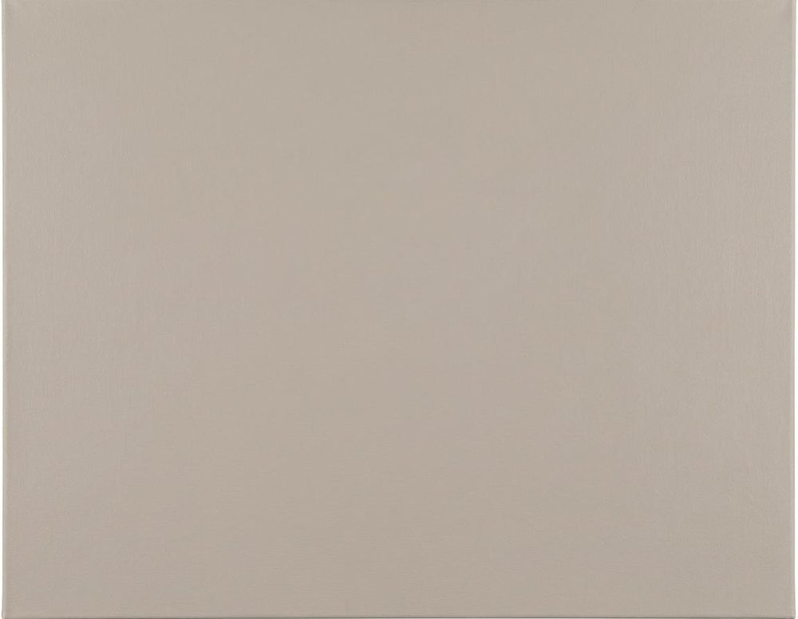
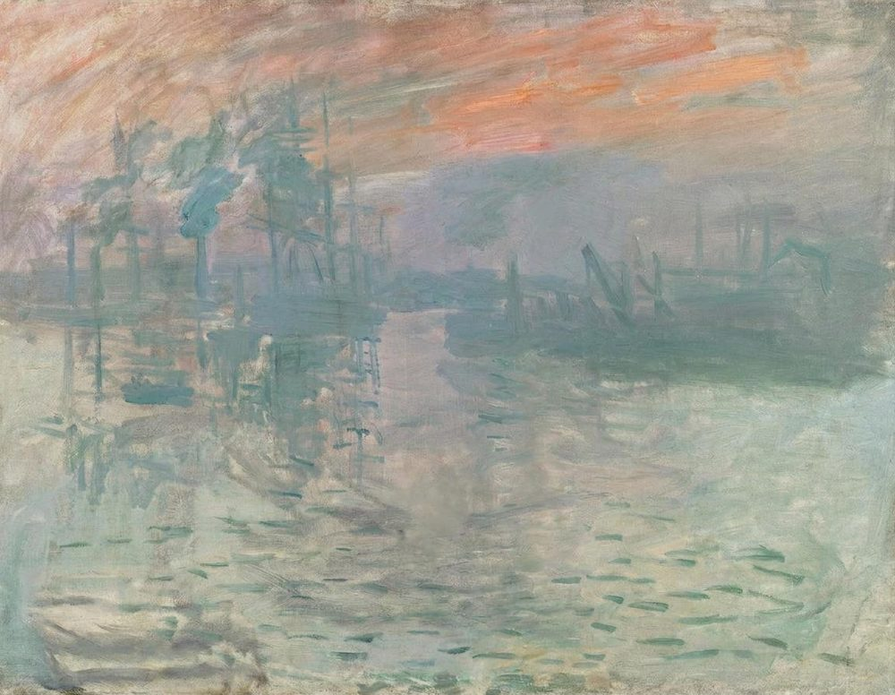
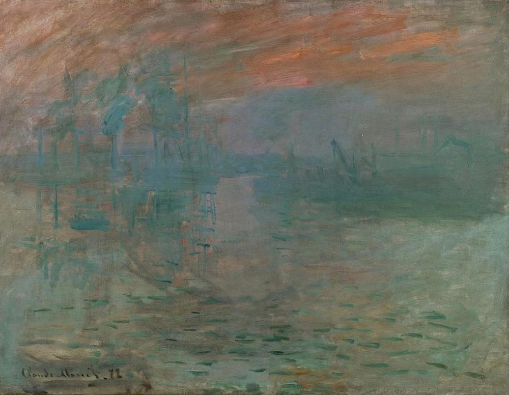
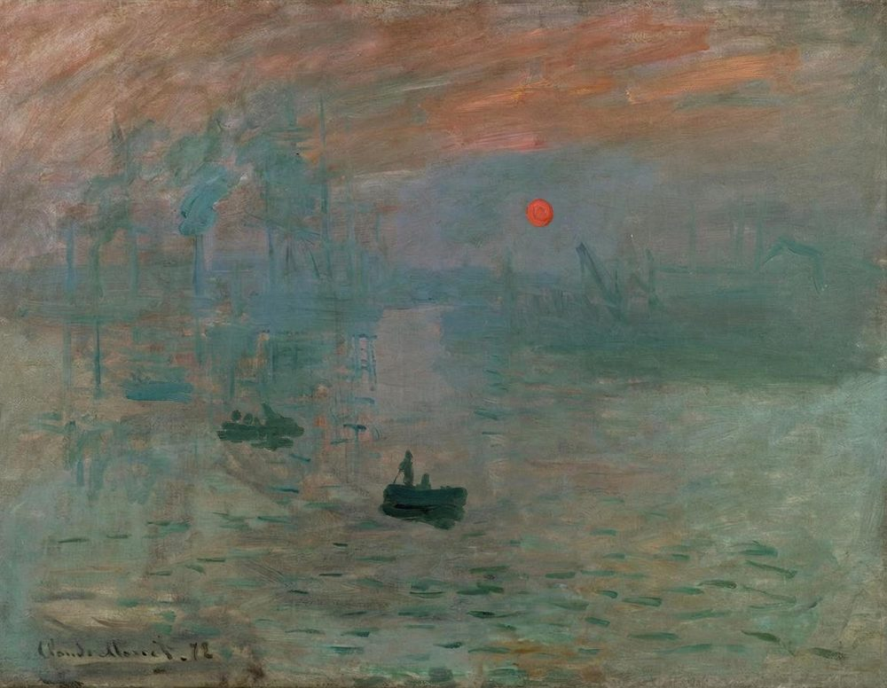
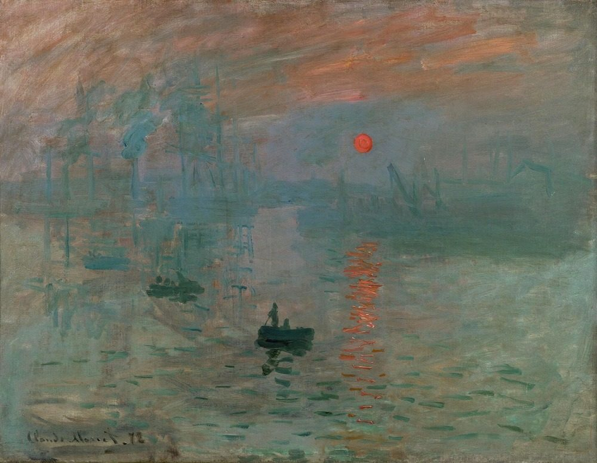
Reflection
Stage 6 of 6Orange dashes on the water. This is the painting today, after an old yellowed varnish was removed in 1991.
EvidenceMuseum chronologies (the Fondation Beyeler, the Getty, the National Gallery) and your own later interviews.
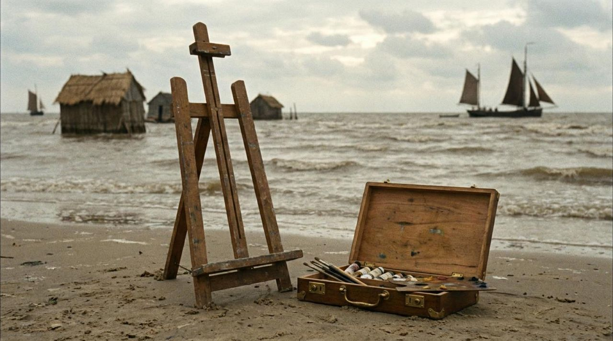
You are Claude Monet. You grew up in Le Havre from about the age of five, in a family that lived off the port, and as a teenager you sold caricatures. Around 1856 the painter Eugène Boudin turned you toward painting outdoors.
In Paris you studied at the Académie Suisse, where you met Pissarro, served in the army in Algeria, and then in 1862 met Johan Jongkind back at Le Havre before joining Charles Gleyre's studio with Bazille, Renoir and Sisley. Long after, you credited Jongkind with the definitive education of your eye.
During the war of 1870–71 you were in London, where you saw Turner and Constable and met the dealer Paul Durand-Ruel. From late 1871 you lived at Argenteuil, and in 1872 your pictures began to sell.
EvidenceThe painting, its two companion views, the Getty's research and your account of 1897.
From the same window you paint three views: a dawn view now at the Getty, this one, and a night view now at the Museum Barberini. Le Havre is France's most modern port, rebuilding after the war, and you show it at work.
You distinguish quick impressions from finished pictures. At the 1874 exhibition you will also show a detailed harbour view, Fishing Boats Leaving the Port of Le Havre, beside this one.
EvidenceThe Musée Marmottan's record and its 2014 study of topography, astronomy, tides and weather. Which room you used is not documented.
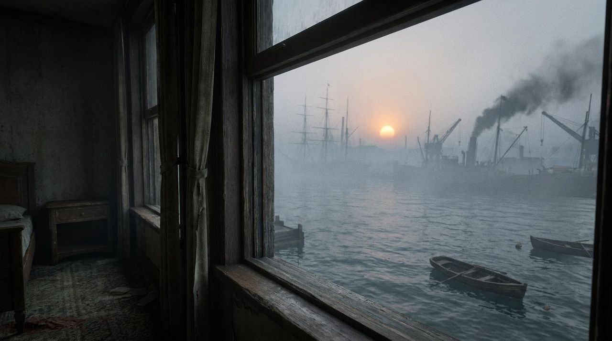
You work indoors, at a window looking south-east over the outer harbour at dawn. The museum names the Hôtel de l'Amirauté on the Grand Quai, which was later destroyed in the war; you did stay there in 1874, but no document places your room in 1872.
For the 2014 exhibition, the astronomer Donald Olson worked out the moment. The sun stands two or three degrees high, about 20 to 30 minutes after sunrise. Ships moved only near high tide, and the smoke shows an east wind. Six dates fit; the curators chose 13 November 1872, at about 7:35 in the morning. Le Havre's records for that morning give a light east wind, fog and a choppy sea.
Treat the minute as a best guess, not a fact. It is the most probable of six dates, it assumes you painted exactly what you saw, and at least one reviewer called the method rigid scientism.
EvidenceNo analysis of this painting has been published. The likely palette comes from the National Gallery's analyses of your works of the 1870s.
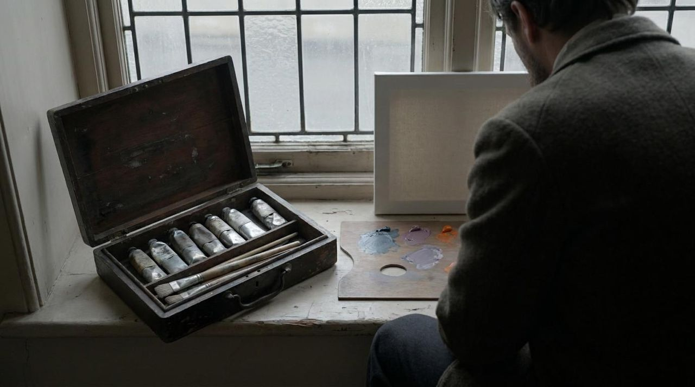
You buy a canvas already primed. At 50 by 65 centimetres it matches a standard French size for landscapes. Its ground colour is unpublished; a picture you painted at Argenteuil the same year has a thin, mauvish lead-white ground left showing in the sky.
Your colours come in tin tubes and your brushes are flat hog bristle. Don't read too much into the tubes: painters sketched outdoors in oil before tubes, and you painted this one indoors.
The cards below list the palette found in your other paintings of these years. For this picture each one is a likelihood, not a finding.
In almost every mixture.
Blues for the mist and shadows.
Cool greens for the water.
A strong orange-red.
Bright yellows of the period; cadmium came later.
A see-through crimson.
EvidenceInferred from the handling and from the museum's “a few hours”. No underdrawing has been reported.
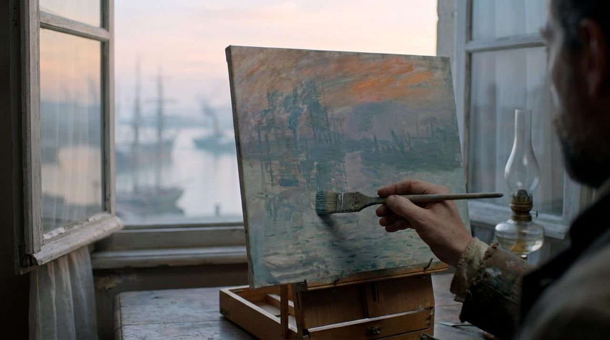
None has been found. You draw with the brush in thin paint.
Scrub thin colour over the whole canvas: grey-blue, green and mauve, with salmon streaks where the light will be.
A narrow range of hues lets you work wet into wet without the colours turning to mud.
Leave the strokes visible and the ground showing through. This is an impression, not a finished view.
EvidenceThe Musée Marmottan, and Géraldine Lefebvre's 2014 study with the restorer Christian Chatellier. The order among the last three steps is not recorded.
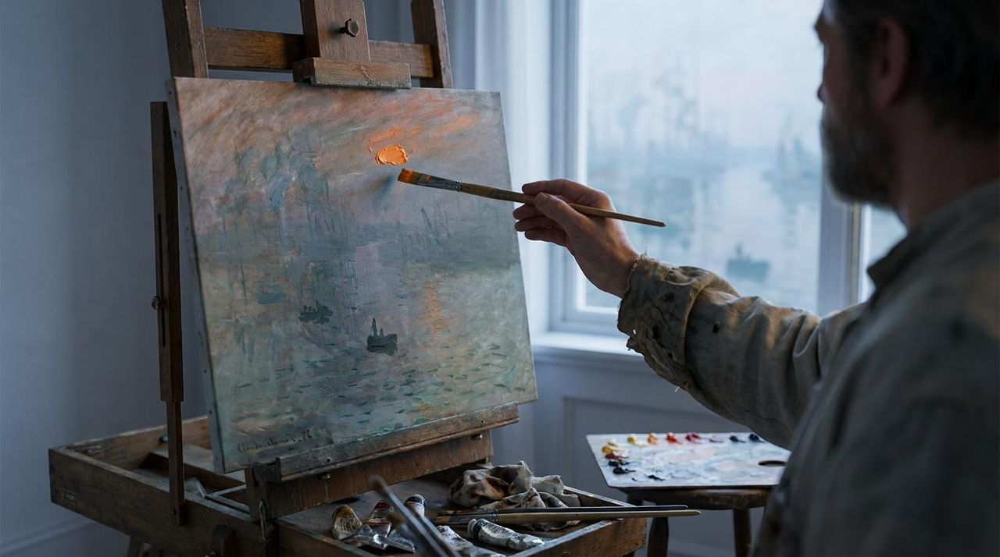
The museum says you painted it in a few hours, probably at one go, and that the boats, the sun and its reflections were added as you were finishing. The restorer who studied it in 2014 concluded it was a single day's work.
AI-generatedAfter step 4: the reflection
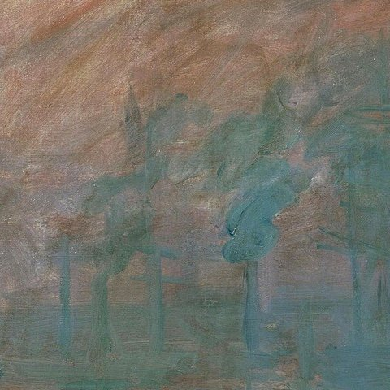
Into the wet washes go the harbour's blue-grey silhouettes: masts and the tall chimney of an engine house built that year on the Quai au Bois at left, cranes and a building on the Quai Courbe, then under construction, at right.
Smoke drifts from left to right. That detail, an east wind, is part of how astronomers dated the morning.
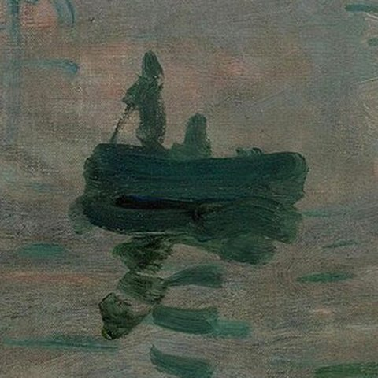
Near the end, add the dark ferrymen's boats in the foreground, a standing figure in the nearest one. A few strokes each, with their reflections broken into the ripples.
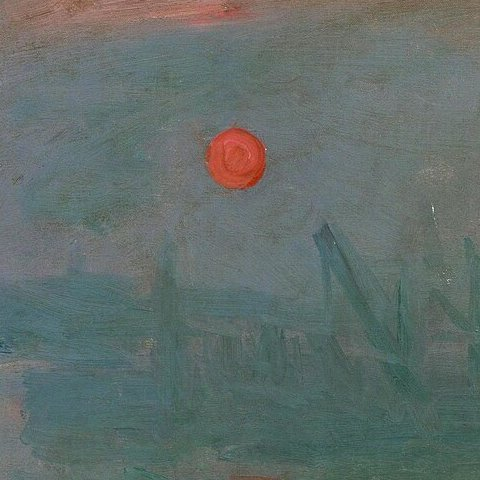
Place the sun: a single disc of orange, probably vermilion or a chrome orange with white. It climbs its own width every three or four minutes, so it records a brief moment.
You paint it almost exactly as bright as the sky around it. It looks blazing only because of its colour.
Last, drag short orange strokes down the water below the sun. With them the picture is done, in a single sitting of a few hours.
EvidenceThe 1874 catalogue, the reviews of Louis Leroy and Jules-Antoine Castagnary, and the museum's 2014 press materials.
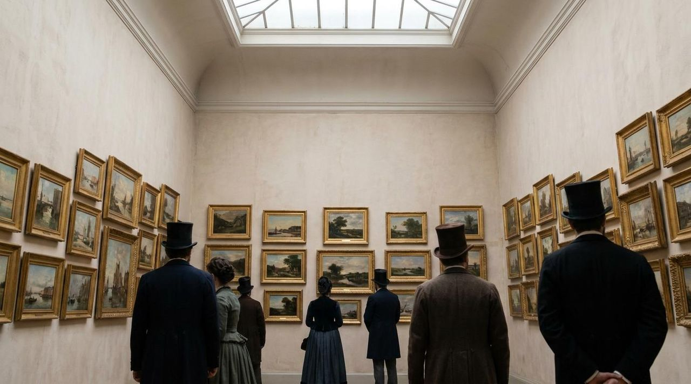
You sign it at lower left, “Claude Monet”. The “72” beside the name was added later.
In April 1874 it hangs in the exhibition your group organises on the boulevard des Capucines, open from 15 April to 15 May. The catalogue lists it as number 98, Impression, soleil levant. About 3,500 visitors come, and critics prefer other pictures.
On 25 April Louis Leroy mocks the show in Le Charivari under the title “L'Exposition des impressionnistes”: his fictional academic painter finds that embryonic wallpaper is more finished than this seascape. Four days later Jules-Antoine Castagnary uses “impressionists” approvingly. Leroy did not invent the word; it was already studio slang, and you chose it.
In May 1874 you sell the painting to Ernest Hoschedé for 800 francs.
EvidenceThe museum's provenance research, news reports of the 1985 theft, and Margaret Livingstone's studies of perception.
One thing has not changed: the trick of the sun. The neuroscientist Margaret Livingstone pointed out that it has almost exactly the same luminance as the sky around it. The parts of your visual system that see brightness and depth can hardly find it, while the parts that see colour can, so it seems to shimmer. In the reproduction used here, the sun's average brightness is within about 3% of the sky around it. In greyscale it nearly vanishes.